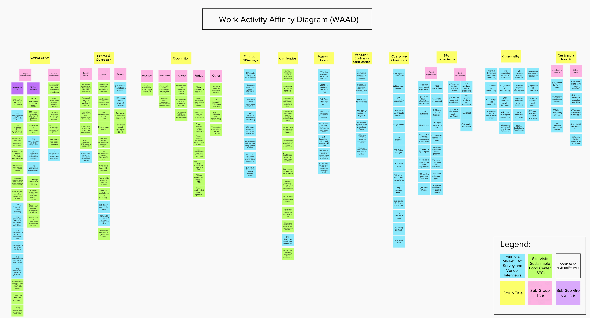
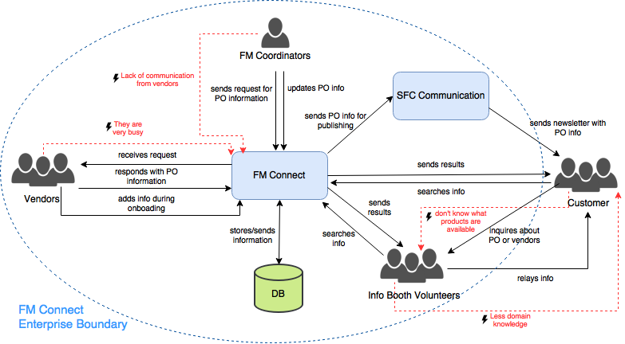
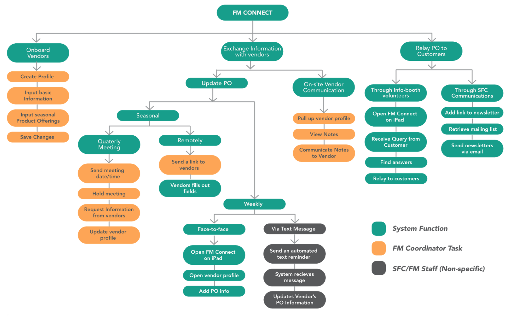
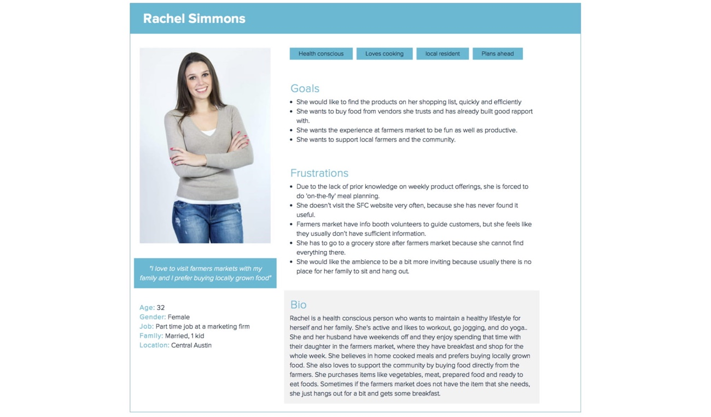
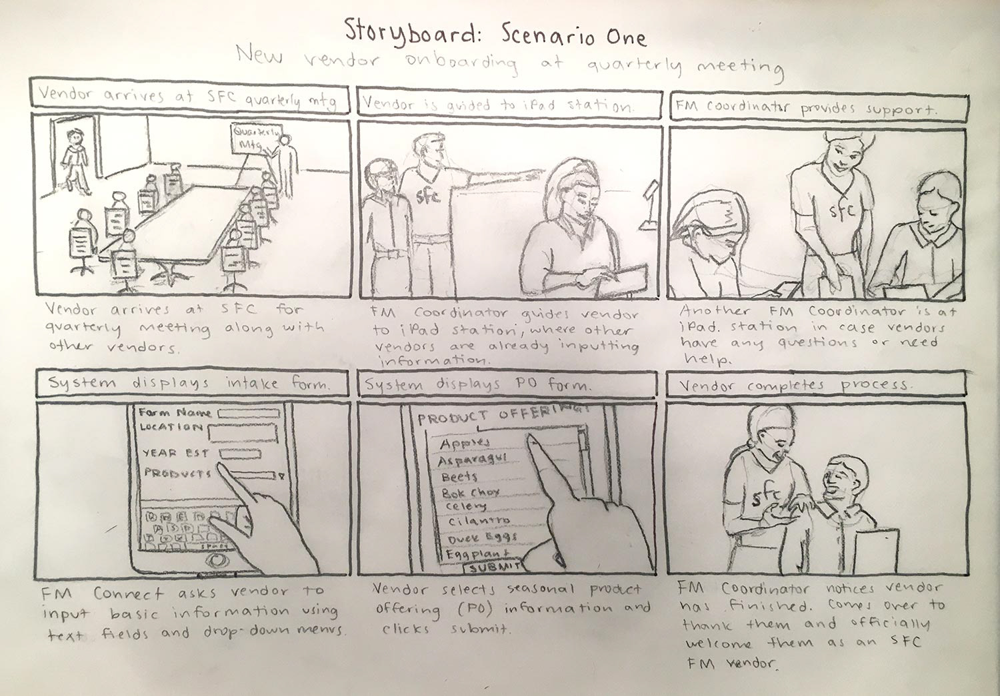
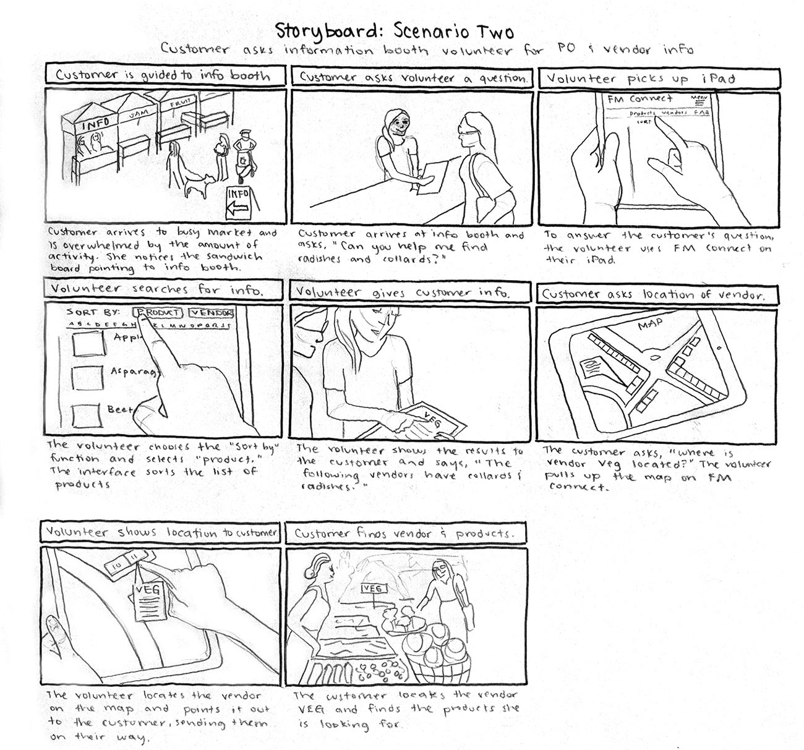
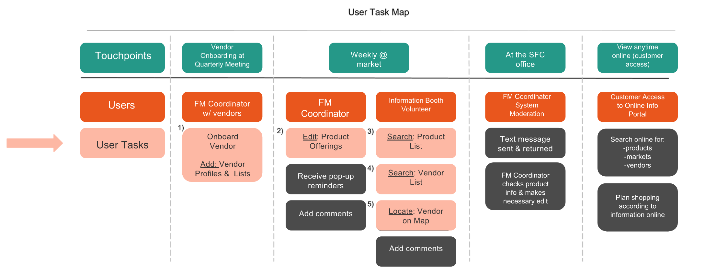
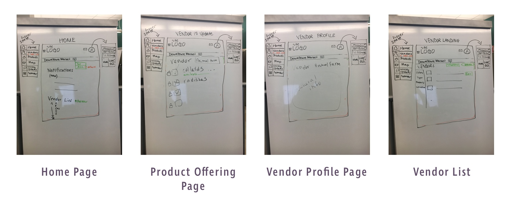
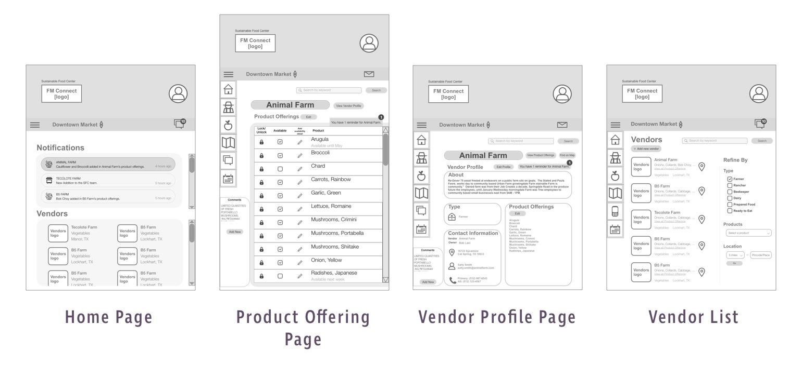
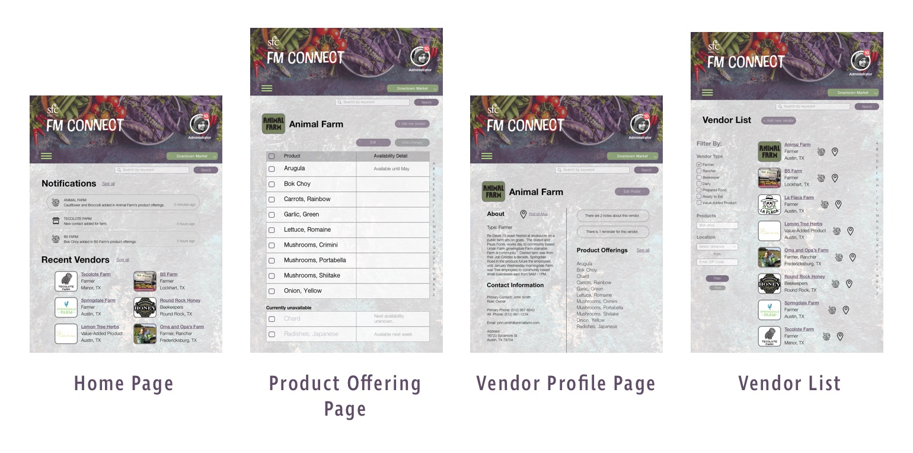

Process

Research Stage
Contextual Inquiry and Analysis
One of our team members had previously worked at Sustainable Food Center and had a good idea of what the pain points were that the client would want us to address in our design. Regardless, we still conducted several types of research for this project. We started with a site visit at the organization's headquarters, where we interviewed two of their farmers market coordinators and collected work artifacts such as online forms they send to farmers, email newsletters, and a diagram of the market. In order to collect information about the farmers market customers, we set up a dot survey station at market and encouraged people to participate; customers who seemed open to further discussion were invited for a short 5-minute interview on location.
We then created an affinity diagram to organize our notes from the survey, stakeholder interviews, and our conversations with customers and vendors.

Key Insights from Research
- customers prefer asking for information at market rather than looking for it on the website
- for most vendors, face-to-face communication is their preferred mode of communication; and,
- volunteers are the main providers of customer service yet the role has a high turnover.
As a result, we drafted our question that would guide our MVP as: "how do we create a technological solution that supports face-to-face customer service?"
Return to the Problem Space
The main takeaway from our research was that the data did not support our original idea; we had entered the process with a design bias. We had begun our project by focusing on the solution space versus starting out in the problem space. In order to refocus our project on the underserved needs and create a user-centered design, we shifted our focus back to the problem space and pivoted to a new solution.
We focused on the fact that the farmers market coordinators relied heavily on volunteer staff to provide customer service at the farmers market information booths. Our solution would allow easy entry of information from the SFC staff that would then be relayed to the volunteers so they could provide accurate information to customers, regardless of their tenure.
Requirements and Modeling
We then created a diagram of the workflow model (see model below) to demonstrate the critical role that the system would play in empowering volunteers and making the farmers market coordinator's job easier. To correct our initial design bias, the appearance and design of the system was left unspecified and instead, we focused on the tasks that needed to be achieved.

One of our initial models (see image below) of the new system focused on three main tasks:
- the onboarding of vendors by the farmers market coordinators;
- the exchange of information with vendors and the input of that information into the system by the coordinators; and,
- the relay of product offering information to customers (mostly at market).

Ideation
Persona Creation
he development of our persona was critical in the design of our system. Though the direct users of our system would be information booth volunteers and staff at the Sustainable Food Center, all of the tasks that would be undertaken within FM Connect were for the purpose of serving the end user - the farmers market customer.
This realization helped us tailor the project scope as we approached the prototyping stage.

Storyboards
To illustrate how the new system would be used within the work environment of the Sustainable Food Center's office and farmers market, we created two storyboards, which I drew for our team.
The final prototypes are based on scenario two, since it was the task that most directly affected the customer service experience.


Interaction Flow for Prototype
Finally, we mapped out the tasks that our initial prototype would support (as illustrated below). In creating our medium fidelity prototype, we kept our end user of the customer in mind so that we would only flesh out the components that would most directly impact the customer service experience at market (as shown in pink below).

Design and Evaluation Stage
Low-fidelity mockup and medium-fidelity prototype
Our team created two prototypes: a low-fidelity mockup on a whiteboard that allowed for on-the-fly edits and honest communication amongst our team members, since we were not wedded to any design elements; and a medium-fidelity mockup created on Sketch and InVision.
We handed off the medium-fidelity prototype to another team for a heuristic evaluation. I used this analysis to guide my final iteration for the high-fidelity prototype. Since the high-fidelity prototype was a personal project and I no longer had to compromise on design, I incorporated additional changes from my own evaluation of the application.
Low-fidelity mockup
Our initial mockup presented some issues. The header was too cluttered, housing both the main navigation and the user's profile information. This was later moved to a strip below the main header.

Medium-fidelity mockup
The medium-fidelity mockup that our group ended the class with also presented some issues. These included a scroll bar, which was unnecessary for a touch interface. We also needed an indicator of when the user was in administrator mode or in volunteer mode. The deisgn of the vendor profile page was also too segmented and busy; I later changed this to a two-column format to facilitate the scanning of information.

High-fidelity prototype screens
The final prototype that I created after the course had ended fixed some remaining issues. I cleaned up the product offering page, since many of the icons we had used previously were indicators for an "editing" functionality and our testing proved that was too confusing. I also moved the filters to the left to mimic most retail sites, such as Amazon.com.

Personal Project Continuation
The wireframe of the current high-fidelity prototype that I created as a personal project is an MVP that explores the function of viewing the vendor list, selecting a vendor, viewing the vendor profile, and viewing their product offerings. The visual design was based on the Sustainable Food Center's aesthetic, which is earthy, textured, and down-to-earth. My wireframes of the prototype are shown below, with annotations for interactions or improvements.
Click here to view the InVision prototype.

Lessons Learned
- There was a gap between the stakeholders' needs and our understanding of the problem; we went into the project with a heavy design bias.
- The dot survey results did not support our initial idea for the product, but it served as an icebreaker to interview custoemrs and gain deeper insights.
- We had assumed custmoers wanted information through the SFC website. We shifted to a true user-centered design proces in order to pivot to a new solution.
- Personas and storyboards are useful to visualize the system and identify potential problems before the prototype process even begins. It also helped us focus on our end user - the customer.
- For such a complex system, we had to prioritize requirements for the prototype. This was before I had heard of the lean product development process but I adopted this method in creating a task-based MVP for the high-fidelity prototype.